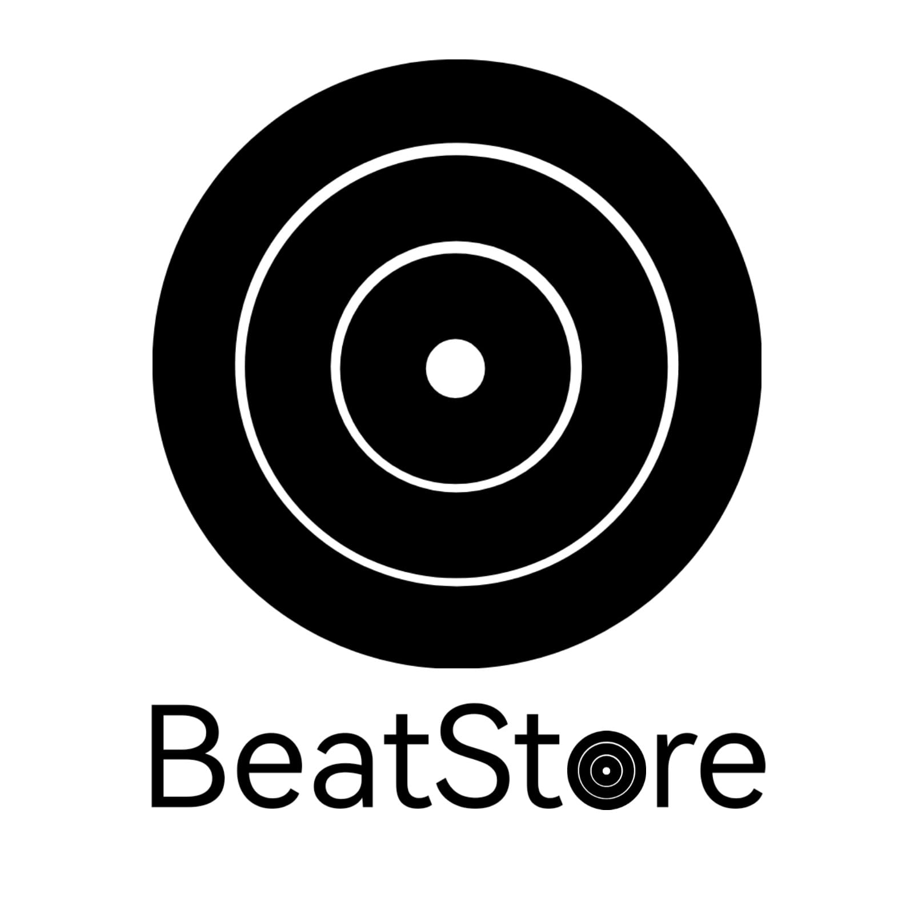

Nuestro proyecto consistirá en crear una plataforma donde los usuarios puedan comprar los vinilos de sus artistas favoritos, pudiendo escuchar una "preview" del vinilo en cuestión para comprobar si el producto es de su agrado. También se podrá puntuar y dar opinión del mismo. La plataforma también permitirá a los usuarios seguir a los artistas para enterarse de sus nuevos lanzamientos o sus próximos eventos y ver los en un calendario. También se podrá ver el top de artistas en cuanto a la venta de vinilos y el mismo top de vinilos más vendidos y mejor valorados
